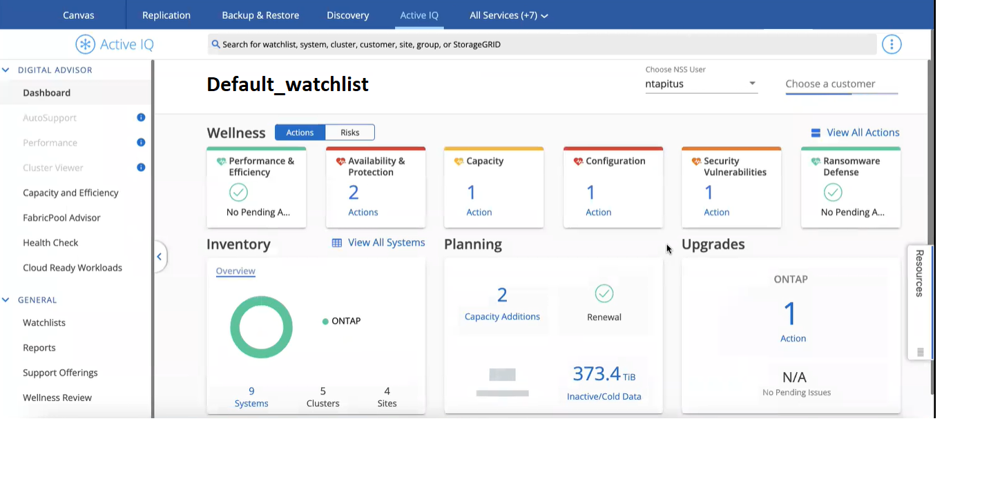

Request doc changes
Request doc changes Edit this page
Edit this page Learn how to contribute
Learn how to contributeOptimize your Cloud Volumes ONTAP systems using Active IQ Digital Advisor
Contributors
Active IQ Digital Advisor is integrated into the Cloud Manager UI so that you can optimize the operations, security, and performance of your Cloud Volumes ONTAP systems in a single pane of glass.
Features
You can view the overall status of your storage system, high-level information about the wellness of the system, inventory, planning, and valuable insights at a watchlist level using Active IQ Digital Advisor.
-
Analyze and optimize the health of your storage systems
-
Gain insights regarding all the risks to your storage systems and the actions to mitigate the risks
-
Analyze the performance of your storage devices by viewing the graphical format of performance data
-
Get details about systems that have exceeded 90% capacity or are nearing 90% capacity
Supported ONTAP systems
Active IQ Digital Advisor provides information for all the on-premises ONTAP systems and Cloud Volumes ONTAP systems within your NSS account.
Cost
There’s no cost to use this service through Cloud Manager.
How Active IQ Digital Advisor works with Cloud Manager
The Active IQ Digital Advisor user interface is completely integrated in Cloud Manager.
In Cloud Manager, click the Active IQ service.
-
If you have already registered an existing NSS account in Cloud Manager, the Active IQ Digital Advisor UI appears just like you would see it in a standalone implementation at https://activeiq.netapp.com/.

-
If you haven’t registered an NSS account in Cloud Manager, register an NSS account now and then the Active IQ Digital Advisor UI appears.

|
As of December 3, 2021, NetApp has switched to a new methodology of registering credentials for NSS accounts. See this FAQ for details. If your NSS account uses the old set of credentials you will need to update the account to the new credentials. |
What’s next
See the Active IQ Digital Advisor documentation for details.